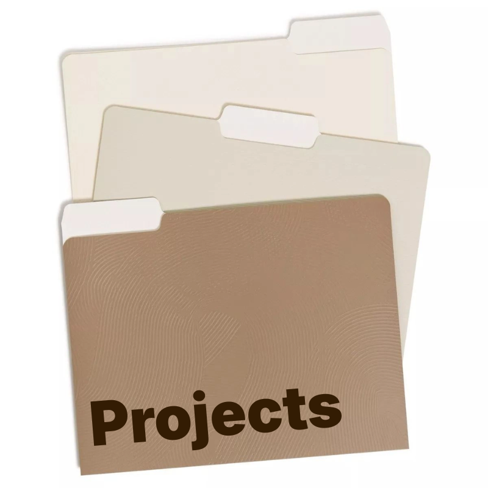

The final project will consist of 4 sections. Each section has a deadline to complete. A complete description of the project can be found on the course moodle site. It will consist of launching a website built with html, css, and javascript and hosted on github. This site is a benchmark for the Final Project. See Project Specification on Moodle Site.
